Goal Alignment
The goal of this website is to be a digital portfolio of my work highlighting my accomplishments, skills and experiences aiming to attract potential employers, collaborators or just to serve as inspiration for those interested in the same field.
Target audience include
Potential Employers: Those looking to potentially offer me a employment opportunity and want an understanding on my experience, skills and quality of work.
Collaborators: Those who view my website and work and are interested in potential collaborative projects or professional networking. Students and Professionals: Those seeking inspiration and motivation from my website design process and body of work and want to learn from it.
Information Structure - Content Mapping
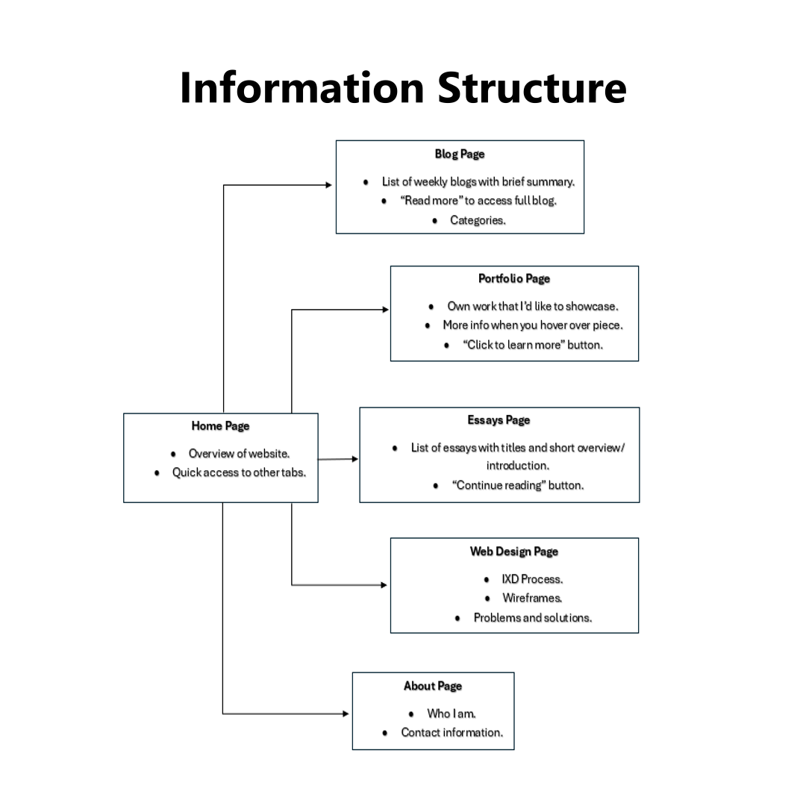User Flow - Screens, Behaviour, and Decisions
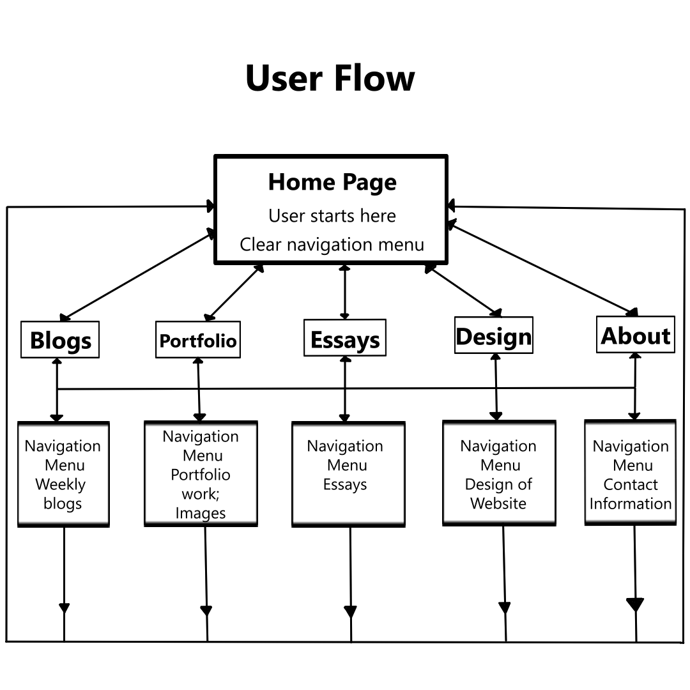Intial Wireframes
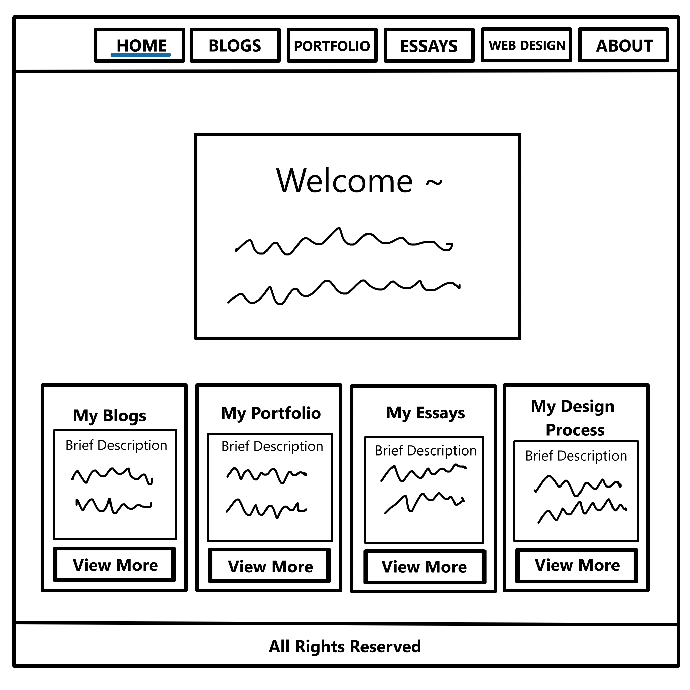 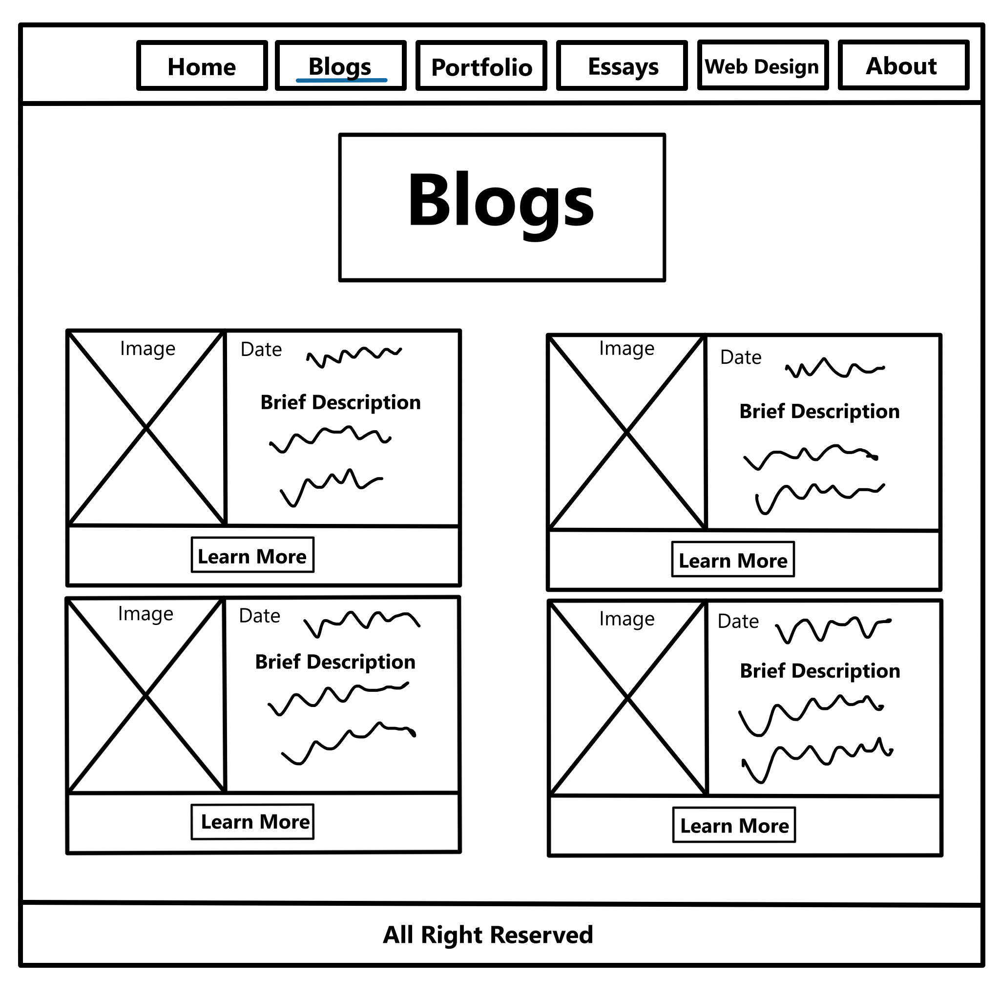 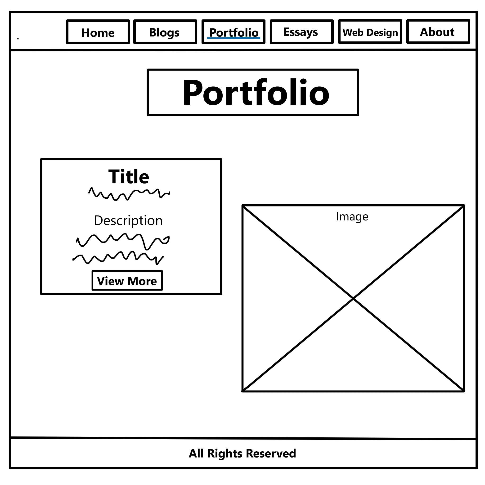 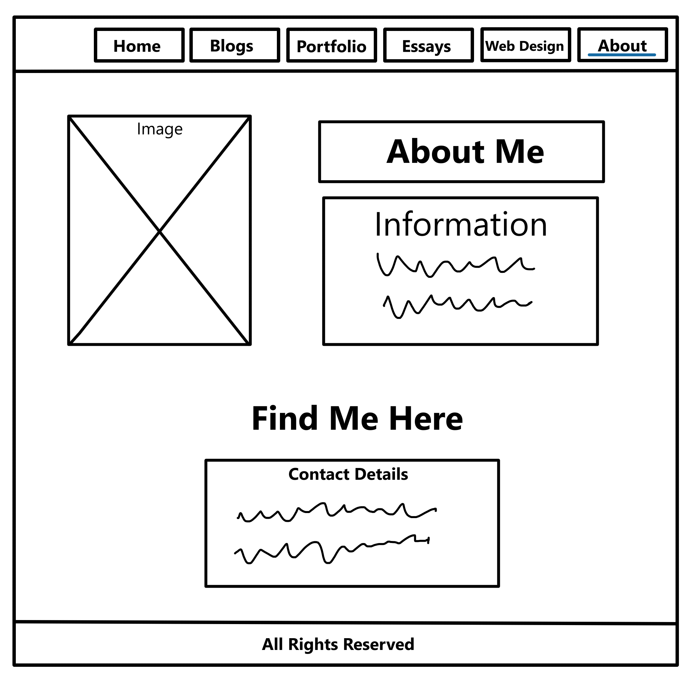
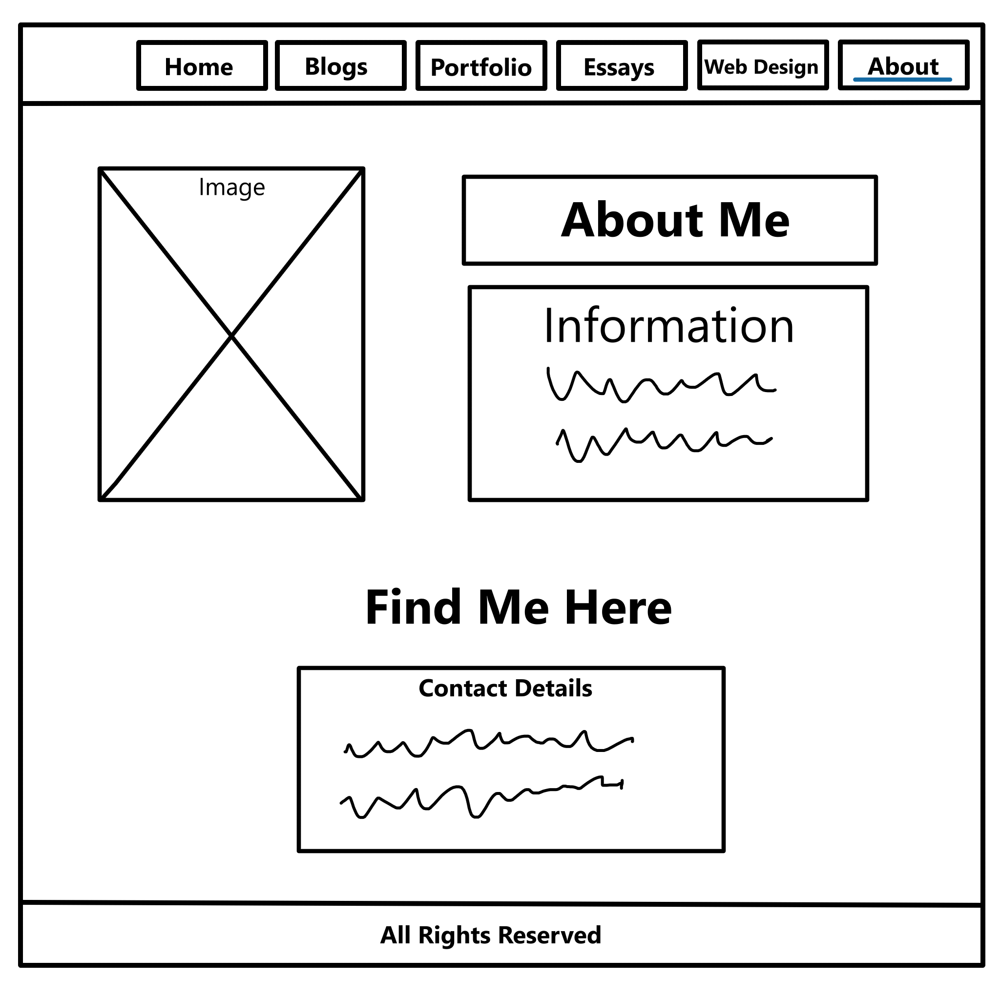
Wireframe with colour palette
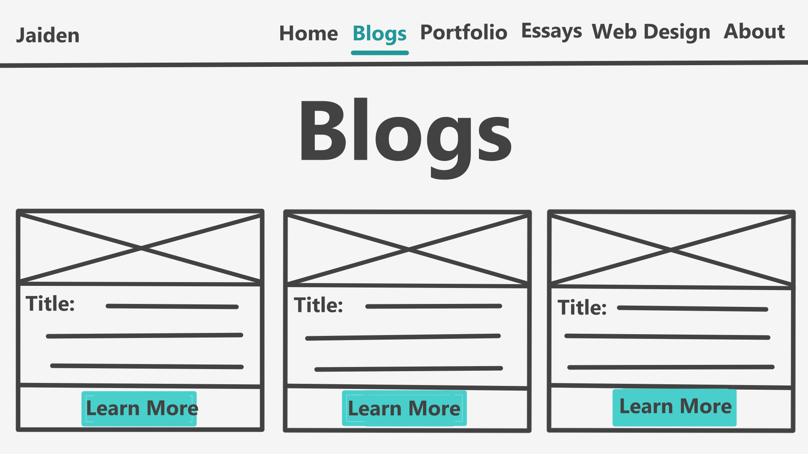Colour Palettes
These are the colour palettes that I have chosen for now, I am certain that these will change during the development of this website. For the colour scheme I wanted a clean or modern look to it with neutral backgrounds to make the content on the pages stand out more and having one or two vibrant colours for emphasis. This will ensure that interactive elements such as buttons and links will stand out more.
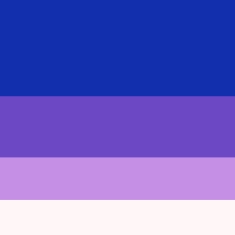 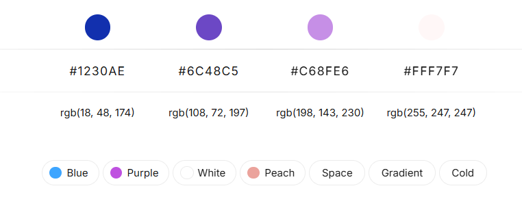 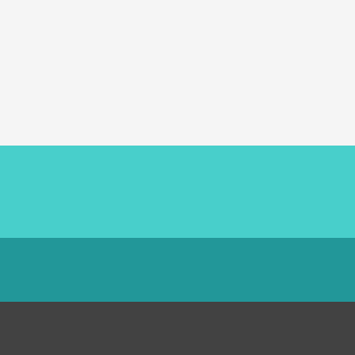 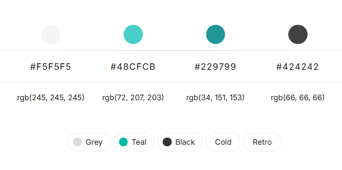 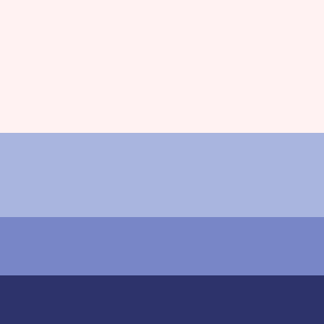 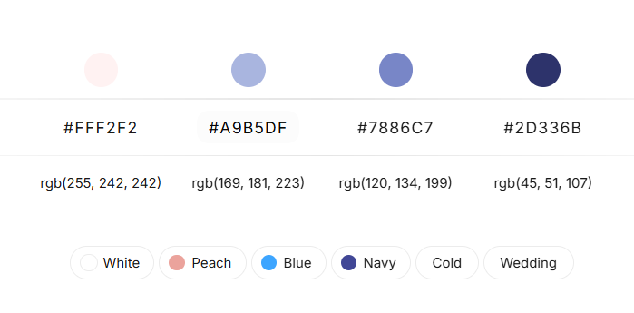Font Choices
For font choices I wanted a balance between how it looks and the functionality, as it must facilitate effortless reading and positively impact the user experience of this website.
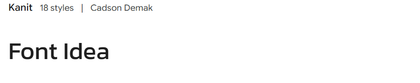 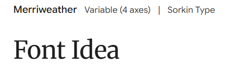 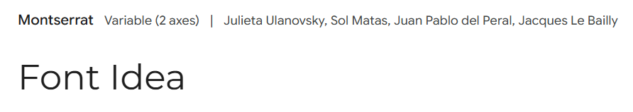 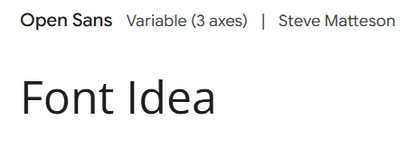 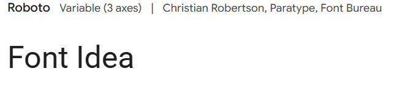Button Ideas
This would be the type of buttons that I would have on the website. To keep up with modern theme I want to have square buttons with rounded edges.
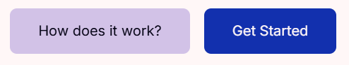 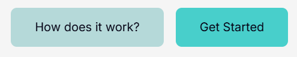List and explanation of selected Interface Elements
Main navigation bar: A consistent navigation bar at the top of each page so users can easily navigate across the website.
Side navigation bar: A side menu that will list all the titles on the specific page allowing the user to go to these titles faster, this will be very useful for the blog, essay and web design page. This will always visibly, making it have a “sticky” navigation feature.
Footer navigation: This will be quick links to my GitHub and social or maybe I would make it a quick link to my about page by having my name as the link in the footer.
Buttons: This will be used throughout the site for directing user action. It will be used for actions such as reading more about a topic whether in blogs or essays and switching between blogs.
Breadcrumb: This will be used so that users can see their current location and path to the page they are on, which enables them to go back and forth between locations as well, so they do not feel lost on the page.
Hover effects: This will be effects that shows up when a user hovers on links, buttons and images giving them feedback that it is interactive. The effects include colour changes, text links becoming underlined and scale transformation so the option becoming bigger or the image on which they hover on becomes bigger.
Loaders: Something to visual communicate that the system is completing an action or loading a task.
Project cards: This will be used for the home, blogs and essays page. For the home page there will be descriptions of the different pages with an image and view more button. For the blog and essays page the card will have a picture or title with a short description of what it is about with a read more button linking it to the full blog or essay.
Reference Material
In this my references I like the neutral backgrounds as it draws attention to the content on the pages and you are able to make eye catching contrast between certain sections on the website.
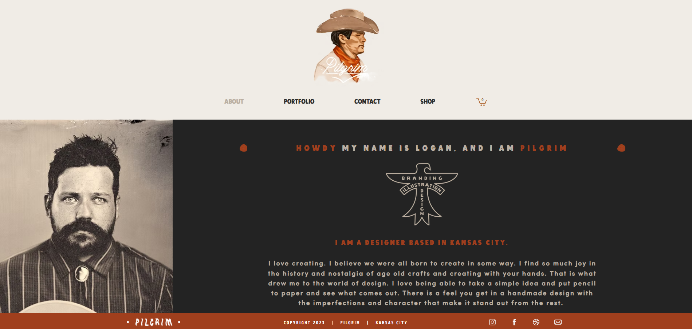 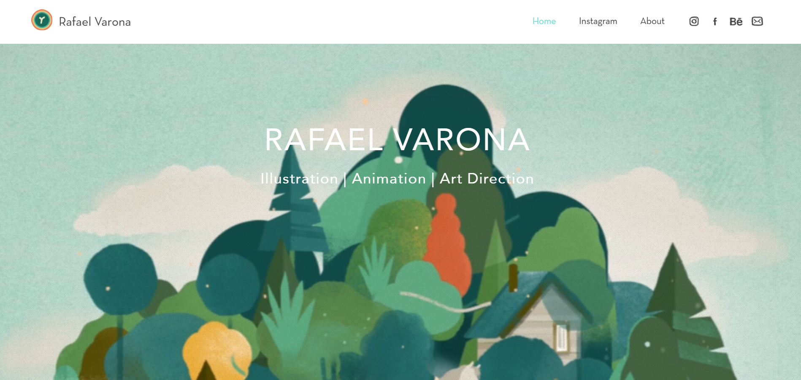